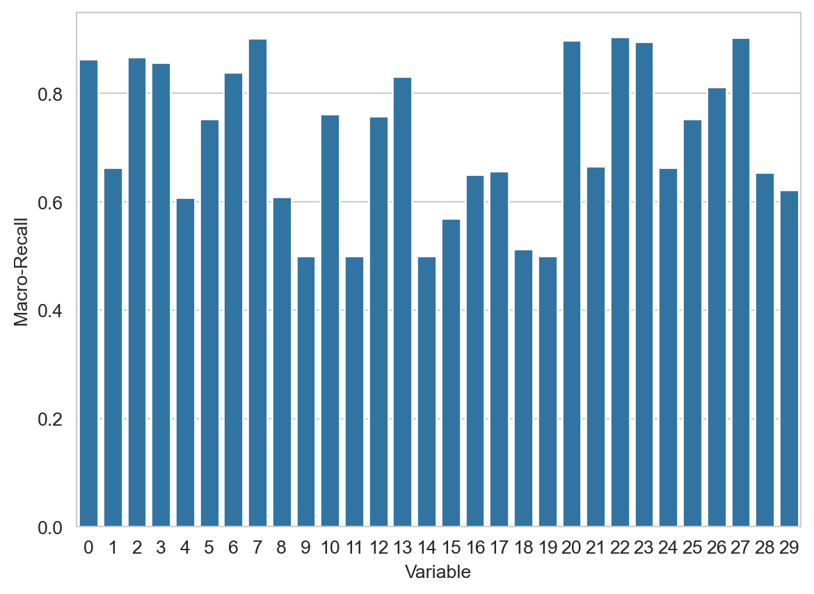
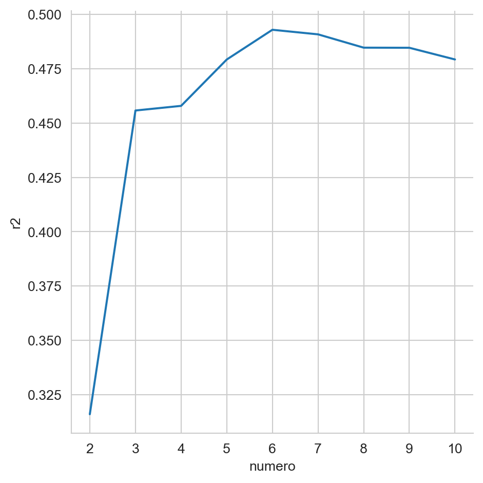
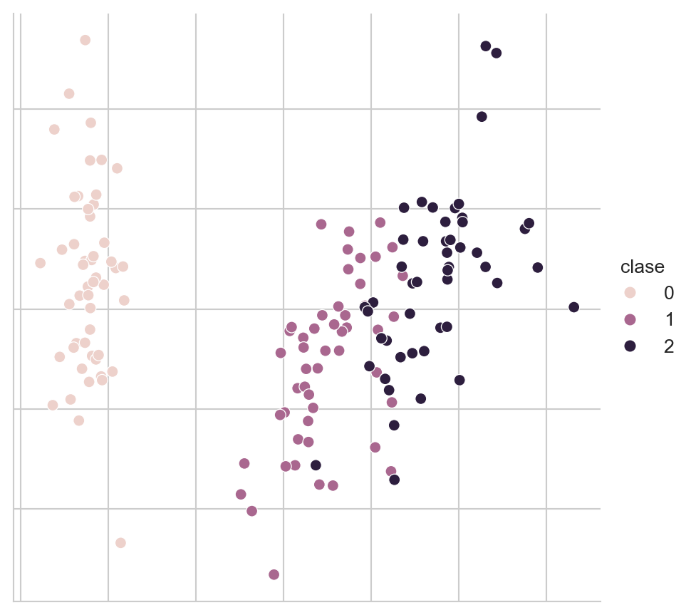
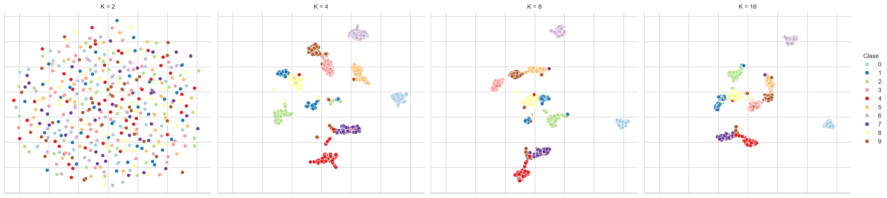
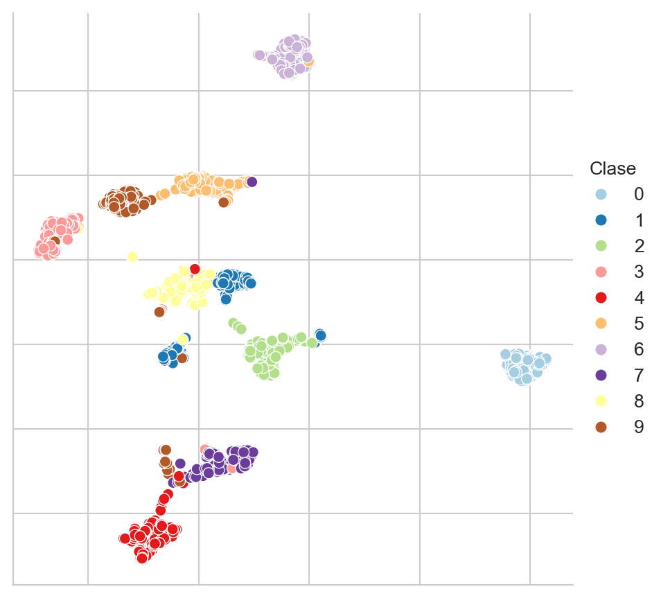

from scipy.stats import multivariate_normal, norm, kruskal
from sklearn.datasets import load_diabetes,\
load_breast_cancer,\
load_iris,\
load_wine,\
load_digits
from sklearn.feature_selection import f_regression,\
SelectKBest,\
SelectFromModel,\
SequentialFeatureSelector
from sklearn.model_selection import KFold, train_test_split
from sklearn.metrics import recall_score, make_scorer, r2_score
from sklearn.linear_model import LinearRegression
from sklearn.naive_bayes import GaussianNB
from sklearn.preprocessing import StandardScaler
from sklearn import decomposition
from EvoMSA.model import GaussianBayes
import umap
import numpy as np
import pandas as pd
from matplotlib import pylab as plt
import matplotlib as mpl
import seaborn as sns5 Reducción de Dimensión
El objetivo de la unidad es aplicar técnicas de reducción de dimensionalidad, para mejorar el aprendizaje y para visualizar los datos
Paquetes usados
5.1 Introducción
Habiendo descrito problemas de clasificación y regresión, podemos imaginar que existen ocasiones donde las variables que describen al problema no contribuyen dentro de la solución, o que su aporte está dado por otras componentes dentro de la descripción. Esto trae como consecuencia, en el mejor de los caso, que el algoritmo tenga un mayor costo computacional o en un caso menos afortunado que el algoritmo tenga un rendimiento menor al que se hubiera obtenido seleccionado las variables. Es pertinente mencionar que el caso contrario correspondiente al incremento del número de variables es también un escenario factible y se abordará en otra ocasión.
Existen diferentes maneras para reducir la dimensión de un problema, es decir, transformar la representación original \(x \in \mathbb R^d\) a una representación \(\hat x \in \mathbb R^m\) donde \(m < d\). El objetivo es que la nueva representación \(\hat x\) contenga la información necesaria para realizar la tarea de clasificación o regresión. También otro objetivo sería reducir a \(\mathbb R^2\) o \(\mathbb R^3\) de tal manera que se pueda visualizar el problema. En este último caso el objetivo es que se mantengan las características de los datos en \(\mathbb R^d\) en la reducción.
Esta descripción inicia con una metodología de selección basada en calcular estadísticas de los datos y descartar aquellas que no proporcionan información de acuerdo a la estadística.
5.2 Selección de Variables basadas en Estadísticas
Se utilizará el problema sintético (Sección 2.3.1) de tres clases para describir el algoritmo de selección. Este problema está definido por tres Distribuciones Gausianas donde se generan tres muestras de 1000 elementos cada una utilizando el siguiente código.
p1 = multivariate_normal(mean=[5, 5],
cov=[[4, 0], [0, 2]])
p2 = multivariate_normal(mean=[1.5, -1.5],
cov=[[2, 1], [1, 3]])
p3 = multivariate_normal(mean=[12.5, -3.5],
cov=[[2, 3], [3, 7]])
X_1 = p1.rvs(size=1000)
X_2 = p2.rvs(size=1000)
X_3 = p3.rvs(size=1000)Estas tres distribuciones representan el problema de clasificación para tres clases. El siguiente código une las tres matrices X_1, X_2 y X_3 y genera un arreglo y que representa la clase.
D = np.concatenate((X_1, X_2, X_3), axis=0)
y = np.array(['a'] * X_1.shape[0] +
['b'] * X_2.shape[0] +
['c'] * X_3.shape[0])Por construcción el problema está en \(\mathbb R^2\) y se sabe que las dos componentes contribuyen a la solución del mismo, es decir, imagine que una de las variables se pierde, con la información restante se desarrollaría un algoritmo de clasificación con un rendimiento mucho menor a aquel que tenga toda la información.
Continuando con el problema sintético, en está ocasión lo que se realiza es incluir en el problema una variable que no tiene relación con la clase, para esto se añade una variable aleatoria con una distribución Gausiana con \(\mu=2\) y \(\sigma=3\) tal como se muestra en el siguiente código.
N = norm.rvs(loc=2, scale=3, size=3000)
D = np.concatenate((D, np.atleast_2d(N).T), axis=1)El objetivo es encontrar la variable que no está relacionada con la salida. Una manera de realizar esto es imaginar que si la media en las diferentes variables es la misma en todas las clases entonces esa variable no contribuye a discriminar la clase. En Sección 3.5.2 se presentó el procedimiento para obtener las medias que definen \(\mathbb P(\mathcal X \mid \mathcal Y)\) para cada clase. El siguiente código muestra el procedimiento para calcular las medías que son \(\mu_1=[5.0494, 4.9877, 1.9303]^\intercal\), \(\mu_2=[1.5272, -1.5190, 2.0854]^\intercal\) y \(\mu_3=[12.5464, -3.4195, 1.8253]^\intercal\).
labels = np.unique(y)
mus = [np.mean(D[y==i], axis=0) for i in labels]Se observa que la media de la tercera variable es aproximadamente igual para las tres clases, teniendo un valor cercano a \(2\) tal y como fue generada. Entonces lo que se busca es un procedimiento que permita identificar que las muestras en cada grupo (clase) hayan sido originadas por la misma distribución. Es decir se busca una prueba que indique que las primeras dos variables provienen de diferentes distribuciones y que la tercera provienen de la misma distribución. Es pertinente comentar que este procedimiento no es aplicable para problemas de regresión.
Si se puede suponer que los datos provienen de una Distribución Gausiana entonces la prueba a realizar es ANOVA, en caso contrario se puede utilizar su equivalente método no paramétrico como es la prueba Kruskal-Wallis. Considerando que de manera general se desconoce la distribución que genera los datos, entonces se presenta el uso de la segunda prueba.
La prueba Kruskal-Wallis identifica si un conjunto de muestras independientes provienen de la misma distribución. La hipótesis nula es que las muestras provienen de la misma distribución. La función kruskal implementa esta prueba y recibe tantas muestras como argumentos. En el siguiente código ilustra su uso, se observa que se llama a la función kruskal para cada columna en D y se calcula su valor \(p\). Los valores \(p\) obtenidos son: \([0.0000, 0.0000, 0.3511]\) lo cual indica que para las primeras dos variables la hipótesis nula se puede rechazar y por el otro lado la hipótesis nula es factible para la tercera variable con un valor \(p=0.3511\).
res = [kruskal(*[D[y==l, i] for l in labels]).pvalue
for i in range(D.shape[1])]En lugar de discriminar aquellas características que no aportan a modelar los datos, es más común seleccionar las mejores características. Este procedimiento se puede realizar utilizando los valores \(p\) de la prueba estadística o cualquier otra función que ordene la importancia de las características.
El procedimiento equivalente a la estadística de Kruskal-Wallis en regresión es calcular la estadística F cuya hipótesis nula es asumir que el coeficiente obtenido en una regresión lineal entre las variables independientes y la dependiente es zero. Esta estadística se encuentra implementada en la función f_regression. El siguiente código muestra su uso en el conjunto de datos de diabetes; el cual tiene \(10\) variables independientes. En la variable p_values se tienen los valores \(p\) se puede observar que el valor \(p\) correspondiente a la segunda variable tiene un valor de \(0.3664\), lo cual hace que esa variable no sea representativa para el problema que se está resolviendo.
X, y = load_diabetes(return_X_y=True)
f_statistics, p_values = f_regression(X, y)Un ejemplo que involucra la selección de las variables más representativas mediante una calificación que ordenan la importancia de las mismas se muestra en el siguiente código. Se puede observar que las nueve variables seleccionadas son: [0, 2, 3, 4, 5, 6, 7, 8, 9] descartando la segunda variable que tiene el máximo valor \(p.\)
sel = SelectKBest(score_func=f_regression, k=9).fit(X, y)
vars = sel.get_support(indices=True)5.2.1 Ventajas y Limitaciones
Las técnicas vistas hasta este momento requieren de pocos recursos computacionales para su cálculo. Además están basadas en estadísticas que permite saber cuales son las razones de funcionamiento. Estas fortalezas también son origen a sus debilidades, estas técnicas observan en cada paso las variables independientes de manera aislada y no consideran que estas variables pueden interactuar. Por otro lado, la selección es agnóstica del algoritmo de aprendizaje utilizado.
5.3 Selección hacia Adelante
Un procedimiento que pone en el centro del proceso de selección al algoritmo de aprendizaje utilizado es Selección hacia Adelante y su complemento que sería Selección hacia Atrás. El algoritmo de selección hacia adelante es un procedimiento iterativo que selecciona una variable a la vez guiada por el rendimiento de esta variable cuando es usada en el algoritmo de aprendizaje. Al igual que los procedimientos anteriores este no modifica las características del problema, solamente selecciona las que se consideran relevantes.
En selección hacia adelante y hacia atrás se inicia con el conjunto de entrenamiento \(\mathcal T = \{(x_i, y_i)\},\) con una función \(L\) que mide el rendimiento del algoritmo de aprendizaje \(\mathcal H.\) La idea es ir seleccionando de manera iterativa aquellas variables que generan un modelo con mejores capacidades de generalización. Para medir la generalización del algoritmo se pueden realizar de diferentes maneras, una es mediante la división de \(\mathcal X\) en dos conjuntos: entrenamiento y validación; y la segunda manera corresponde a utilizar \(k\)-iteraciones de validación cruzada.
Suponga un conjunto \(\pi \subseteq \{1, 2, \ldots, d\}\) de tal manera que \(\mathcal T_\pi\) solamente cuenta con las variables identificadas en el conjunto \(\pi\). Utilizando está notación el algoritmo se puede definir de la siguiente manera. Inicialmente $^0 = $, en el siguiente paso \(\pi^{j + 1} \leftarrow \pi^j \cup \textsf{arg max}_{\{i \mid i \in \{1, 2, \ldots, d\}, i \notin \pi^j\}} \mathcal P(\mathcal H, \mathcal T_{\pi \cup i}, L)\), donde \(\mathcal P\) representa el rendimiento del algoritmo \(\mathcal H\) en el subconjunto \({\pi \cup i}\) usando la función de rendimiento \(L\). Este proceso continua si \(\mathcal P^{j+1} > \mathcal P^j\) donde \(\mathcal P^0 = 0\).
Es importante mencionar que el algoritmo antes descrito es un algoritmo voraz y que el encontrar el óptimo de este problema de optimización no se garantiza con este tipo de algoritmos. Lo que quiere decir es que el algoritmo encontrará un óptimo local.
Ilustrando estos pasos en el conjunto de Breast Cancer Wisconsin (Sección 3.7).
D, y = load_breast_cancer(return_X_y=True)
T, G, y_t, y_g = train_test_split(D, y, test_size=0.2)El primer paso es medir el rendimiento cuando solamente una variable interviene en el proceso. Como inicialmente $^0 = $ entonces solo es necesario generar un clasificador cuando sola una variable está involucrada. El rendimiento de cada variable se guarda en la variable perf, se puede observar que el primer ciclo (línea 3) itera por todas las variables en la representación, para cada una se seleccionan los datos solo con esa variable T1 = T[:, np.array([var])] después se hacen \(k\)-iteraciones de validación cruzada y finalmente se guarda el rendimiento. El rendimiento que se está calculando es macro-recall.
perf = []
kfold = KFold(shuffle=True)
for var in range(T.shape[1]):
T1 = T[:, np.array([var])]
perf_inner = []
for ts, vs in kfold.split(T1):
gaussian = GaussianNB().fit(T1[ts], y_t[ts])
hy_gaussian = gaussian.predict(T1[vs])
_ = recall_score(y_t[vs], hy_gaussian,
average='macro')
perf_inner.append(_)
perf.append(np.mean(perf_inner))La Figura 5.1 muestra el rendimiento de las 30 variables, se observa como una gran parte de las variables proporcionan un rendimiento superior al \(0.8\) y la variable que tiene el mejor rendimiento es la que corresponde al índice \(27\) y valor \(0.9037\).
Código
sns.barplot(x=list(range(len(perf))), y=perf)
plt.xlabel('Variable')
fig = plt.ylabel('Macro-Recall')

El algoritmo de selección hacia atrás y adelante se implementa en la clase SequentialFeatureSelector y su uso se observa en las siguientes instrucciones.
kfolds = list(KFold(shuffle=True).split(T))
scoring = make_scorer(lambda y, hy: recall_score(y, hy,
average='macro'))
seq = SequentialFeatureSelector(estimator=GaussianNB(),
scoring=scoring,
n_features_to_select='auto',
cv=kfolds).fit(T, y_t)Al igual que en el algoritmo de SelectKBest las variables seleccionadas se pueden observar con la función get_support. En este caso las variables seleccionadas son: \([1, 4, 7, 9, 11, 14, 16, 17, 18, 19, 21, 22, 23, 24, 26]\).
Utilizando el parámetro direction='backward' para utilizar selección hacia atrás en el mismo conjunto de datos, da como resultado la siguiente selección \([1, 4, 6, 7, 8, 11, 15, 17, 20, 21, 22, 23, 24, 27, 28]\). Se puede observar que las variables seleccionadas por los métodos son diferentes. Esto es factible porque los algoritmos solo aseguran llegar a un máximo local y no está garantizado que el máximo local corresponda al máximo global.
5.3.1 Ventajas y Limitaciones
Una de las ventajas de la selección hacia atrás y adelante es que el algoritmo termina a lo más cuando se han analizado todas las variables, esto eso para un problema en \(\mathbb R^d\) se analizarán un máximo de \(d\) variables. La principal desventaja es que estos algoritmos son voraces, es decir, toman la mejor decisión en el momento, lo cual tiene como consecuencia que sean capaces de garantizar llegar a un máximo local y en ocasiones este máximo local no corresponde al máximo global. Con el fin de complementar esta idea, en un problema \(\mathbb R^d\) se tiene un espacio de búsqueda de \(2^d - 1\), es decir, se tiene esa cantidad de diferentes configuraciones que se pueden explorar. En los algoritmos de vistos se observa un máximo de \(d\) elementos de ese total.
5.4 Selección mediante Modelo
Existen algoritmos de aprendizaje supervisado donde sus parámetros indican la importancia que tiene cada característica en el problema. Para ejemplificar esto se utilizará el problema de Diabetes que fue utilizado en la Sección 3.9.1. Los datos se obtienen con la siguiente instrucción, adicionalmente se normalizan las características para tener una media \(0\) y desviación estándar \(1\).
D, y = load_diabetes(return_X_y=True)
D = StandardScaler().fit_transform(D)El siguiente paso se estiman los parámetros de una regresión lineal (Sección 3.9), también se muestran los valores de los primeros tres coeficientes de la regresión. Se puede observar que el valor absoluto de estos coeficientes está en diferentes rangos, el primer coeficiente es cercano a cero, el segundo está alrededor de 10 y el tercero es superior a 20. Considerando que los datos están normalizados, entonces el valor absoluto indica el efecto que tiene esa variable en el resultado final, en estos tres datos es puede concluir que el tercer coeficiente tiene una mayor contribución que los otros dos coeficientes.
reg = LinearRegression().fit(D, y)
reg.coef_[:3]array([ -0.47612079, -11.40686692, 24.72654886])La clase SelectFromModel permite seleccionar las \(d\) características que el modelo considera más importante. En el siguiente ejemplo se selecciona las \(d=4\) características más importantes; dentro de estas características se encuentra la tercera (i.e., índice 2) cuyo coeficiente se había presentado previamente.
sel = SelectFromModel(reg, max_features=4,
threshold=-np.inf, prefit=True)
np.where(sel.get_support())[0]array([2, 4, 5, 8])Habiendo descrito el procedimiento para seleccionar aquellas características más importantes, es necesario encontrar cuál es el número de características que producen el mejor rendimiento. Para realizar esto, se realiza \(k\)-iteraciones de validación cruzada (Sección 4.4.1), donde se varía el número de características y en cada caso se mide el rendimiento utilizando la medida \(R^2\) (Sección 4.3).
folds = [x for x in KFold(shuffle=True).split(D, y)]
perf = []
dims = range(2, D.shape[1] + 1)
for dim in dims:
model = SelectFromModel(reg, max_features=dim,
threshold=-np.inf, prefit=True)
hy = np.empty_like(y)
for tr, vs in folds:
Dt = model.transform(D)
m = LinearRegression().fit(Dt[tr], y[tr])
hy[vs] = m.predict(Dt[vs])
perf.append(dict(r2=r2_score(y, hy), numero=dim))La Figura 5.2 muestra el rendimiento (\(R^2\)) para cada modelo generado, empezando cuando se usan las \(2\) características más importantes y terminando con el modelo que tiene todas las características. En la figura se puede observar que el rendimiento mejora considerablemente de \(2\) a \(3\) características, este sigue mejorando y llega un punto donde incluir más características tiene un impacto negativo en el rendimiento.
Código
df = pd.DataFrame(perf)
ax = sns.relplot(df, x='numero', y='r2', kind='line')

5.5 Análisis de Componentes Principales
Los algoritmos de selección hacia atrás y adelante tiene la característica de requerir un conjunto de entrenamiento de aprendizaje supervisado, por lo que no podrían ser utilizados en problemas de aprendizaje no-supervisado. En esta sección se revisará el uso de Análisis de Componentes Principales (Principal Components Analysis - PCA) para la reducción de dimensión. PCA tiene la firma: \(f: \mathbb R^d \rightarrow \mathbb R^m\) donde \(m < d\)
La idea de PCA es buscar una matriz de proyección \(W^\intercal \in \mathbb R^{m \times d}\) tal que los elementos de \(\mathcal D = \{x_i\}\) sea transformados utilizando \(z = W^\intercal x\) donde \(z \in \mathbb R^m\). El objetivo es que la muestra \(z_1\) tenga la mayor variación posible. Es decir, se quiere observar en la primera característica de los elementos transformados la mayor variación; esto se puede lograr de la siguiente manera.
Si suponemos que \(\mathbf x \sim \mathcal N_d(\mu, \Sigma)\) y \(\mathbf w \in \mathbb R^d\) entonces \(\mathbf w \cdot \mathbf x \sim \mathcal N(\mathbf w \cdot \mu, \mathbf w^\intercal \Sigma \mathbf w)\) y por lo tanto \(\textsf{Var} (\mathbf w \cdot \mathbf x) = \mathbf w^\intercal \Sigma \mathbf w.\)
Utilizando esta información se puede describir el problema como encontrar \(\mathbf w_1\) tal que \(\textsf{Var}(\mathbf z_1)\) sea máxima, donde \(\textsf{Var}(\mathbf z_1) = \mathbf w_1^\intercal \Sigma \mathbf w_1.\) Dado que en este problema de optimización tiene multiples soluciones, se busca además maximizar bajo la restricción de \(\mid\mid \mathbf w_1 \mid\mid = 1.\) Escribiéndolo como un problema de Lagrange quedaría como: \(\max_{\mathbf w_1} \mathbf w_1^\intercal \Sigma \mathbf w_1 - \alpha (\mathbf w_1 \cdot \mathbf w_1 - 1).\) Derivando con respecto a \(\mathbf w_1\) se tiene que la solución es: \(\Sigma \mathbf w_i = \alpha \mathbf w_i\) donde esto se cumple solo si \(\mathbf w_1\) es un eigenvector de \(\Sigma\) y \(\alpha\) es el eigenvalor correspondiente. Para encontrar \(\mathbf w_2\) se requiere \(\mid\mid \mathbf w_2 \mid\mid = 1\) y que los vectores sean ortogonales, es decir, \(\mathbf w_2 \cdot \mathbf w_1 = 0.\) Realizando las operaciones necesarias se encuentra que \(\mathbf w_2\) corresponde al segundo eigenvector y así sucesivamente.
5.5.1 Ejemplo - Visualización
Supongamos que deseamos visualizar los ejemplos del problema del iris. Los ejemplos se encuetran en \(\mathbb R^4\) entonces para poderlos graficar en \(\mathbb R^2\) se requiere realizar una transformación como podría ser Análisis de Componentes Principales.
Empezamos por cargar los datos del problema tal y como se muestra en la siguiente instrucción, en la segunda linea se normalizan los datos para tener una media \(0\) y desviación estándar \(1\), este procedimiento es necesario cuando los valores de las características se encuentran en diferentes escalas.
D, y = load_iris(return_X_y=True)
D = StandardScaler().fit_transform(D)Habiendo importado los datos el siguiente paso es inicializar la clase de PCA, para esto requerimos especificar el parámetro que indica el número de componentes deseado, dado que el objetivo es representar en \(\mathbb R^2\) los datos, entonces el ocupamos dos componentes. La primera línea inicializa la clase de PCA, después, en la segunda línea se hace la proyección.
pca = decomposition.PCA(n_components=2).fit(D)
Xn = pca.transform(D)El siguiente código se utiliza para visualizar los datos. El resultado se muestra en la Figura 5.3, donde se observa en diferente color cada una de las clases.
Código
data = pd.DataFrame([dict(x=x, y=y, clase=c)
for (x, y), c in zip(Xn, y)])
fig = sns.relplot(data, kind='scatter',
x='x', y='y', hue='clase')
fig.tick_params(bottom=False, top=False,
left=False, right=False,
labelbottom=False, labelleft=False)
fig.set(xlabel=None, ylabel=None)

5.6 UMAP: Uniform Manifold Approximation and Projection for Dimension Reduction
En esta sección se presenta el uso de UMAP propuesto por McInnes, Healy, y Melville (2020). UMAP es una técnica no lineal para reducir la dimensión y que con dimensiones bajas (\(d=2\)) permite tener una visualización de los datos. El ejemplo que se realizará es visualizar mediante UMAP los datos del problema de Dígitos, estos datos se pueden obtener con la siguiente instrucción; en estas instrucciones también se normalizan los datos para tener una media \(0\) y desviación estándar \(1.\)
D, y = load_digits(return_X_y=True)
D = StandardScaler().fit_transform(D)Con el objetivo de ilustrar la diferencia entre una técnica de proyección lineal como PCA con respecto a una técnica no lineal, la Figura 5.4 presenta la proyección del conjunto de Dígitos utilizando PCA. Como se puede observar en la figura, esta proyección no da una separación clara entre grupos, aunque si se puede identificar una estructura, donde algunos números se encuentran en la perifería de la figura.
Código
pal = mpl.cm.Paired
pca = decomposition.PCA(n_components=2).fit(D)
Xn = pca.transform(D)
df = pd.DataFrame(Xn, columns=['x', 'y'])
df['Clase'] = y
fig = sns.relplot(df, kind='scatter',
legend='full', palette=pal,
x='x', y='y', hue='Clase')
fig.tick_params(bottom=False, top=False,
left=False, right=False,
labelbottom=False, labelleft=False)
fig.set(xlabel=None, ylabel=None)UMAP genera una proyección que intuitivamente trata de preservar la distancia que existe entre los \(K\) vecinos cercanos en la dimensión original como en la dimensión destino. Por este motivo un parámetro importante de UMAP es la cantidad de vecinos, que se tiene el efecto de priorizar la estructura global o local de los datos. En el siguiente código se realiza una exploración de este parámetro generando una visualización para \(K=[2, 4, 8, 16].\) El código que realiza está exploración se muestra en las siguientes instrucciones.
df = pd.DataFrame()
for K in [2, 4, 8, 16]:
reducer = umap.UMAP(n_neighbors=K)
low_dim = reducer.fit_transform(D)
_ = pd.DataFrame(low_dim, columns=['x', 'y'])
_['Clase'] = y
_['K'] = K
df = pd.concat((df, _))La Figura 5.5 muestra las diferentes visualizaciones cuando el número de vecinos de cambia en UMAP, se puede observar como para \(K=2\) la visualización no muestra ninguna estructura, pero partiendo de \(K=4\) se puede visualizar grupos que corresponden a los diferentes dígitos.
Código
fig = sns.relplot(df, kind='scatter', x='x', y='y',
legend='full', palette=pal,
hue='Clase', col='K')
fig.tick_params(bottom=False, top=False,
left=False, right=False,
labelbottom=False, labelleft=False)
fig.set(xlabel=None, ylabel=None)

Con el objetivo de mostrar con mayor detalle los grupos encontrados, la Figura 5.6 muestra la visualización de \(K=8\) en ella se puede observar como los ejemplos se agrupan de acuerdo al dígito que representan, también se puede ver la similitud entre los diferentes dígitos y como algunos ejemplos están muy cerca a un grupo al cual no pertenecen.
Código
fig = sns.relplot(df[df.K==8], kind='scatter',
legend='full', palette=pal,
x='x', y='y', hue='Clase')
fig.tick_params(bottom=False, top=False,
left=False, right=False,
labelbottom=False, labelleft=False)
fig.set(xlabel=None, ylabel=None)
